此文件由 朱學�� 製作
由於目前災情已經漸漸明朗，分享災情的系統和狀況會慢慢轉為需要義工和物資的分配系統。
所以，奉XDite的指示，要跟大家介紹一個義工揪團或是有義工需求的團體使用起來還蠻方便的客製化報名系統。
http://registrano.com/
基本上這個系統很簡單，免費版本的可以讓你開啟一個活動，讓三十個人參與和報名、分享意見。（我才用兩次就寫這個介紹了，可見真的很簡單）
由於救災求快和時效性，所以複雜先進的功能我們不說！
首先註冊！這個註冊需要你填入的資訊相當少！
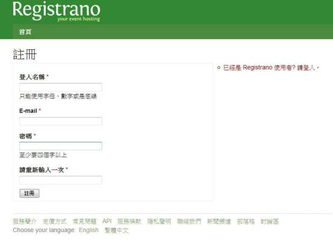
就是一個登入名稱，EMAIL和密碼而已。
請注意，本人根據經驗不建議你用Hotmail，因為我上次測試時會把認證信歸類到垃圾信件去。
好啦，總之登錄了之後，系統會寄一個認證信給你！點選信件裡面連結就好！
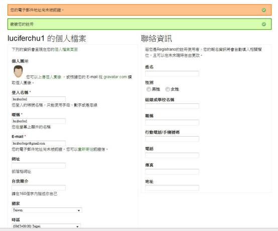
然後這個畫面呢，左手邊的內容都是說明你是哪一位，右手邊的內容則是平常比較方便你報名別人活動用！但因為你是揪團的團長，建議還是把聯絡資訊都寫清楚以昭公信嘛！
好啦！認證完畢之後，請按畫面右上那個鈕！
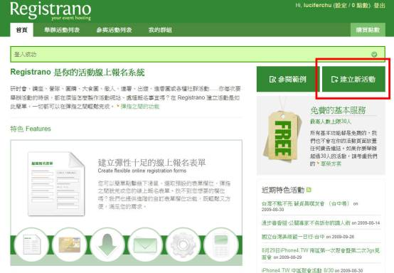
建立新活動！
我從網路上抓了一個隨便的範例來示範！
假設這是一個出發到屏東去，在台南集合的救災義工活動！
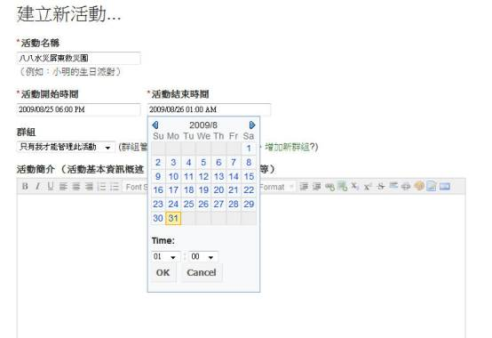
你可以很輕易的設定活動開始和結束的時間。
下面的活動簡介則可以讓你貼圖或是貼連結，加上簡短說明都可以！
輸入完畢大概是下面這個樣子（資訊我都是舉例的！）
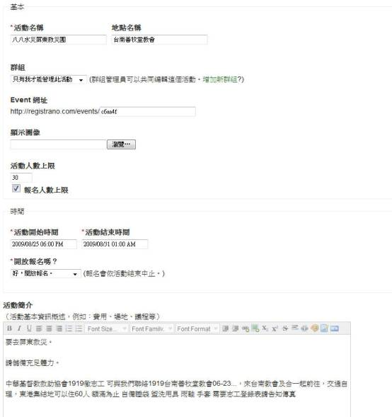
對於一些容易迷路的阿宅來說，你還可以編輯地點和顯示地圖！
要先透過這個介面：
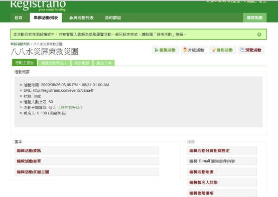
左手邊的「編輯活動地圖」就是了！
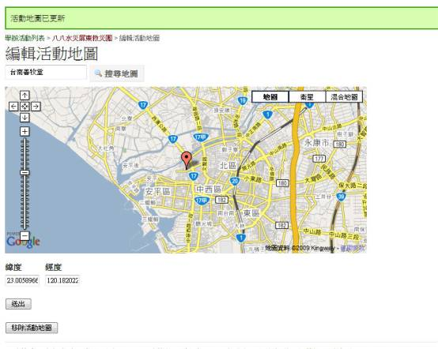
編輯完要記得儲存喔！
「編輯報名人狀態」則是讓你在線上讓參與者可以查詢自己的報名結果：
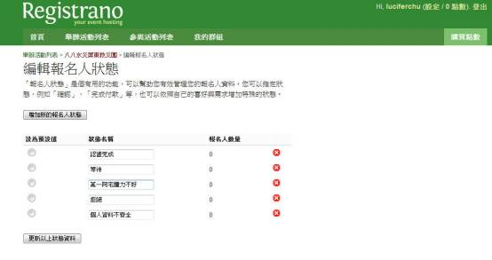
而且這是可以定做的，你可以修改狀態名稱，然後指定某一個人的狀態。譬如說你懷疑某個報名者是阿宅，他可能無法深入高山泥濘處所，就可以修改一個狀態，並且勾選他。或者你也可以說報名人資料不齊全等等。
然後基本介面的編輯活動資訊就是更改這個活動的簡介和最一開始輸入的東西。
而「編輯活動表單」這東西聽起來很難懂，就簡單這樣想像，你出一張考卷給義工，需要他填什麼資料就可以定作和自己設計！
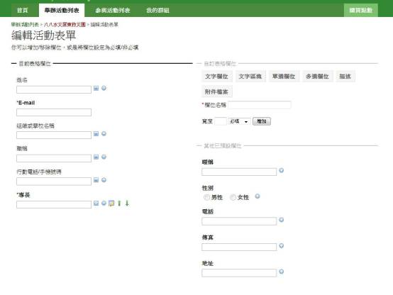
自訂表格欄位的意思都很好懂，文字欄位的意思就是像名字、EMAIL這類少字的欄位。
文字區塊就是像自傳這類的大篇幅。
單選、多選、描述都是像考題一樣的概念啦！附件檔案就是上傳！
然後記得要設定是不是必填！
另外，基本概念是不要太複雜！義工填不完肚子就餓了就不會來參加啦！
基本上上面填完之後，設計出來的系統就是下面這樣的形狀！（你可以選擇預覽測試看看，或是直接發佈公開出來！）
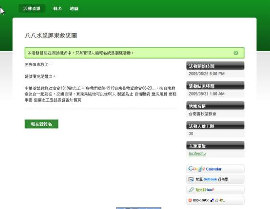
這樣你可以自己看看參與義工是否可以輕易瞭解，或是需要的資料是不是都填了！
然後都確定之後就可以發佈和公開了，等到有人報名就利用後台系統來管理吧！
喔喔補充一下，那個編輯活動頁面主題是設計外觀的，我們男子漢不管這種細節！你有興趣自己弄！
在有人報名之後，這系統可以發統一信給各個報名的人！
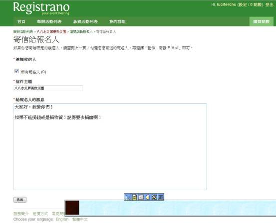
也可以發簡訊，但是要花錢買點數就對了！不然人家賺什麼呢！但XDite說可以凹凹看老闆是不是救災贊助！
一旦公布活動出去之後，就會有一個URL讓你可以宣傳！
像是這個例子就是 http://registrano.com/events/c6aa4f 就可以讓大家登錄啦！
好了！基本上初階使用揪團完畢！後續資料管理和運作就要靠各位的經驗和誠意啦！